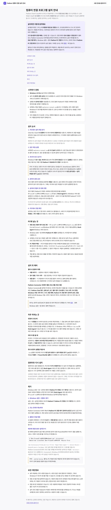

② PC 연결
설치 안내에서 PC 연결 승인 뒤 자연어 파일 검색까지 확인합니다.
준비물: 로그인 없이 1–2단계까지 볼 수 있어요. 3–5단계는 준비된 계정이 필요해 지금은 화면 자리를 비워 두었습니다.
1단계 · 내 컴퓨터를 연결할 설치 안내를 살펴봐요.
이렇게 해요: 설치 안내 열기
이렇게 보여요: “컴퓨터 연결 프로그램 설치 안내”와 “이 PC 연결하기” 표시
화면에서 확인하는 것: 화면이 열렸는지, 로드 걸린 시간

2단계 · 안내를 확인하고 설치 파일을 준비해요.
이렇게 해요: 설치 파일 안내 보기
이렇게 보여요: 현재 배포 상태에 맞는 안내 표시; 파일을 자동 실행하지 않음
화면에서 확인하는 것: 응답 여부·문구, 걸린 시간

3단계 · 준비된 시험 PC 연결을 승인해요.
[화면 준비 중 — 시험 계정 확정 후 촬영]
이렇게 해요: 시험 PC 연결 승인 요청 확인·승인
이렇게 보여요: 연결된 PC 상태 표시
화면에서 확인하는 것: 승인 응답 상태·걸린 시간, 시간 초과 여부
4단계 · 자연어로 컴퓨터의 파일을 찾아봐요.
[화면 준비 중 — 시험 계정 확정 후 촬영]
이렇게 해요: “내 컴퓨터에서 xlsx 찾아줘” 요청
이렇게 보여요: 검색 결과 표시
화면에서 확인하는 것: 응답 여부·총 걸린 시간·시간 초과 여부·결과 표시
5단계 · 검색 결과를 확인해요.
[화면 준비 중 — 시험 계정 확정 후 촬영]
이렇게 해요: 결과 확인
이렇게 보여요: 결과 확인
화면에서 확인하는 것: 완료 상태·걸린 시간
영상과 자막
영상 준비 중 — 녹화와 자막은 아직 이 화면에 올리지 않았습니다.
촬영 범위: 게스트 1–2단계.
계정 3–5단계는 [화면 준비 중 — 시험 계정 확정 후 촬영]로 두고 같은 자리에 이어 붙입니다.